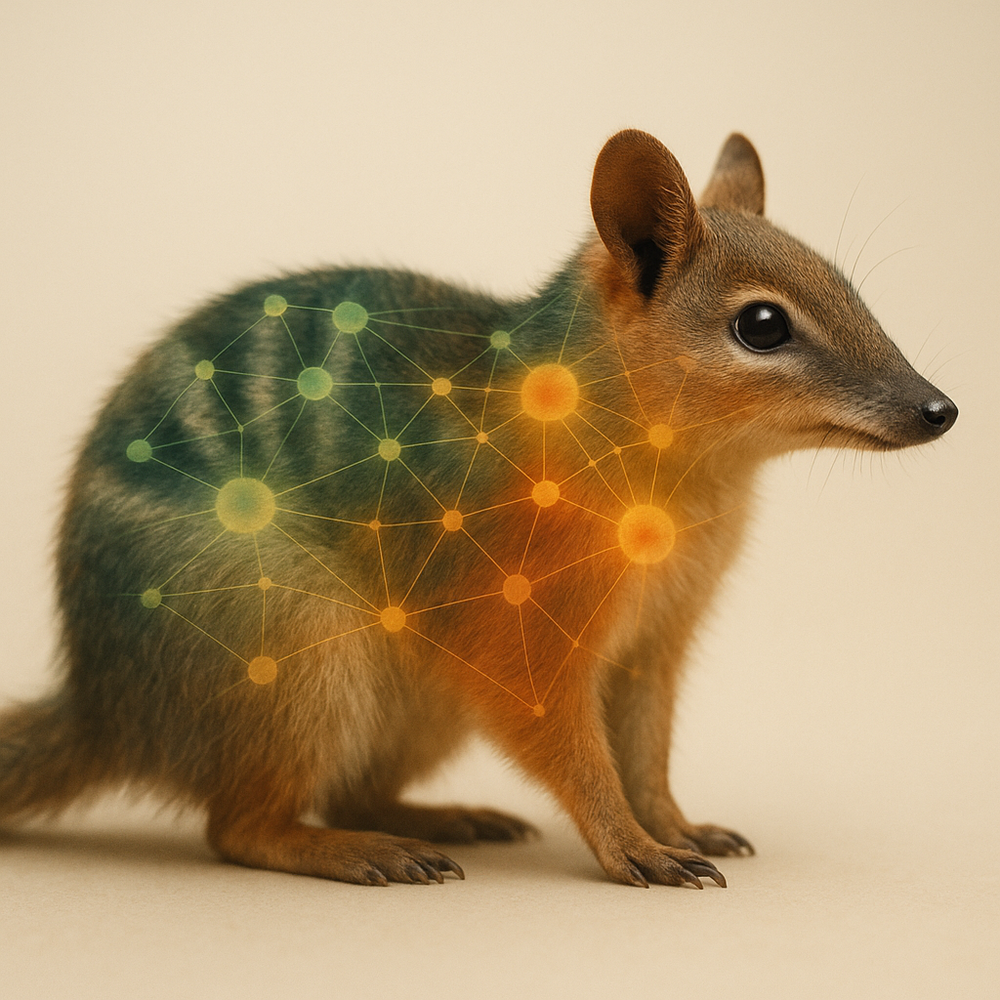
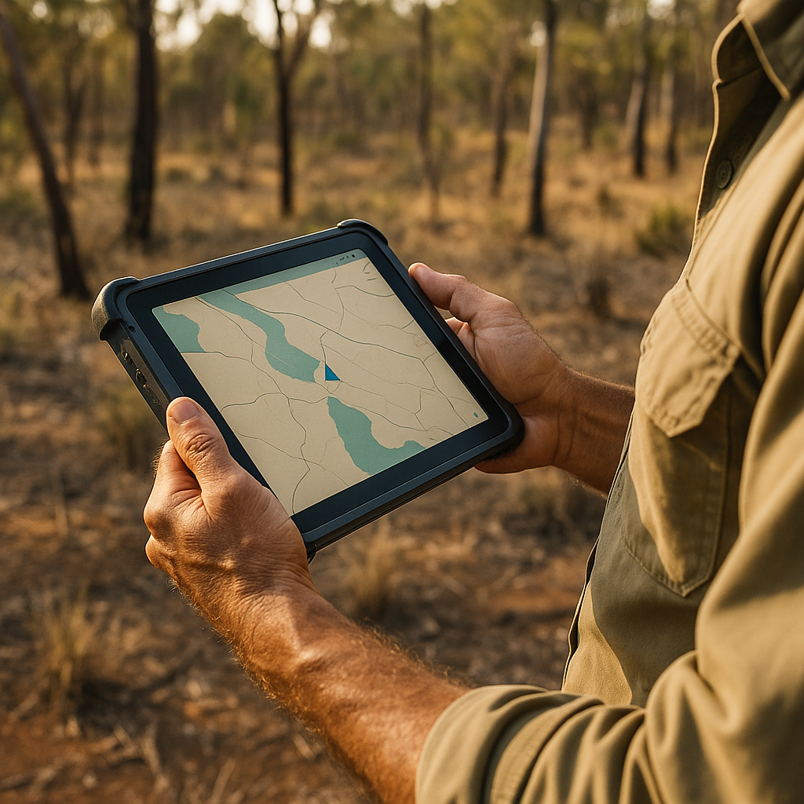

Restore and protect bushland, supporting healthy ecosystems and resilient habitats.
Detect
Edge AI cameras and data tools to identify species and inform action quickly.
Manage
Practical field systems that help reduce threats from invasive and feral species.
We work with native and endangered species — and also the threats they face, including feral cats, pigs, deer, camels, and other invasive animals.
Our mission
Institute for the Protection of Australian Wildlife Limited’s objects are exclusively for charitable purposes and are to protect, promote and advance the natural environments within Australia by implementing environmental management systems that protect and restore Australian fauna and natural habitats.
Charitable objects
Restore and protect large areas of bushland across Australia, and promote restoration using ecological and bush regeneration techniques.
Distribute Environmental Management Systems free of charge to conservationists and community stakeholders to help detect and manage species, safeguarding Australia’s endemic fauna.
Conduct research and fund technological developments in applied AI, including publishing environmental datasets and AI model libraries that protect, restore, and conserve habitats.
Ethically design and engineer trapping technologies freely available to conservationists to protect wildlife and their habitats from feral and pest populations.
Promote and sponsor rigorous research into strategic applications of artificial intelligence in environmental conservation and the protection of natural environments.
How we work
Field-first: systems built for real bush conditions — heat, dust, rain, and patchy connectivity.
Open by default: publish code, tools, and datasets where permissions allow.
Ethical & safe: prioritize animal welfare, human safety, and ecological outcomes.
Actionable outputs: detection → decision → response, with clear reporting and audit trails.
Projects
Technology and field programs designed to protect native wildlife and manage threats.
Edge AI Wildlife Camera Platform
Solar + battery edge cameras with on-device animal classification (target vs non-target), designed for deterrent systems and low-power reporting.
On-device inference for fast response
Hardware-targeted models
Field deployment tooling

AI Model Generation
Training and export pipelines tailored to low-power hardware targets, with an emphasis on transparency and reproducibility.
Model libraries (where permitted)
Dataset documentation
Evaluation and benchmarking

Field Ops & Data Tools
Web/mobile tools for camera site management, image ingestion, and analytics dashboards to help teams move from data to decisions.
Site inventory and deployments
Ingestion and review workflows
Reporting and audit trails
People
Leadership team
SVT
Stephen von Takach
Founder & Director
Stephen brings over 20 years of expertise in software engineering and technology innovation to the leadership of iPAW. As the co-founder of a successful building automation company, Stephen has acquired extensive technical knowledge and strategic business experience, which directly translates into his current role spearheading technological initiatives at iPAW. With strong connections in the business and investment communities, Stephen effectively bridges technical innovation with strategic partnerships and fundraising. Holding a Bachelor’s degree in Computer Science and a Diploma in Project Management, his academic background complements his practical experience in project leadership and execution. Stephen is deeply passionate about environmental conservation, dedicating his technical skills to advancing AI-driven solutions to protect Australia's unique biodiversity and natural habitats.
CJ
Dr Chris Jolly
Director
Chris brings over a decade of experience in behavioural and evolutionary ecology, invasion biology, and conservation science to his leadership role at iPAW. With a background spanning academia, government, and industry, he has built a diverse network of collaborators and developed strong expertise in managing the ecological impacts of invasive species. His knowledge informs iPAW’s applied conservation efforts, particularly in identifying when and where control will be most effective. After completing his PhD at the University of Melbourne—investigating the unintended consequences of Australia’s threatened species strategy—Chris has published extensively, contributed to major conservation policy reports, and co-authored an award-winning field guide. He is recognised as an emerging leader in Australian conservation, combining rigorous science with a focus on real-world outcomes. Chris is passionate about leveraging ecological and evolutionary insights to design novel, evidence-based strategies for invasive species control. His commitment to protecting Australia’s unique biodiversity drives his work with iPAW and beyond.
MV
Michael Vradenburg
Director
Michael Vradenburg is an ambitious professional with a rich background across various technical fields. With a passion for innovation and technology, Michael has honed his skills in the ecological management sector, where he has developed effective practical solutions for feral animal control, creating a valuable impact with technology previously absent from the industry. Michael's expertise extends into digital media where he has developed skills in creating and managing a successful presence on an online platform. These skills have been applied in both his professional and volunteer work, notably in remaining an active multi-year volunteer media crew leader at a local organisation. Michael demonstrates a strong sense of community service through ongoing small-scale fundraising operations and volunteer physical labour. This blend of technical skill and community involvement highlights his versatile and dedicated approach to creating a resourceful social impact. Currently pursuing a degree in computer science, Michael is solidifying his knowledge and skills in order to stay at the forefront of the tech industry. His ongoing education combined with his problem-solving ingenuity and practical experience puts him in an ideal position to make significant contributions to the technological and societal advancements iPAW seeks to achieve.
MJ
Michael Johnston
Director
Michael’s career has been predominantly associated with undertaking applied research to improve the management of invasive mammals that impact on native wildlife populations. His early career included support to a number projects within the Victorian Government’s Vertebrate Pest Research Unit. Primarily, he was involved in the development of the Curiosity® bait for feral cat control between 1996-2006 and led the research for the subsequent period to 2014. He continues to undertake research to inform conservation land managers on the use of the product. He has assisted in the development of spin-off products such as the Hisstory® bait as well as lethal implants. Michael has contributed to the successful eradication of feral cat populations on Tasman and Dirk Hartog Islands and a feral pig eradication on Quail Island. He designed and led on-ground operations for the attempted feral cat eradication program on French Island until the point that the project became untenable. He is contributing to similar operations on islands in Bass Strait, the Indian and Atlantic Oceans. Monitoring and reporting the legacy outcomes of eradication programs continues is a source of pride. Michael has a keen interest in adapting new technologies to support biodiversity conservation outcomes and regards iPAW as a necessary vehicle to support the development and adoption of new management and monitoring tools. Michael established Ecolegacy Pty Ltd in 2023 and has an established professional network with fruitful collaborations throughout Australia, New Zealand and beyond. His research has been published in a range of peer-reviewed and popular press journals.
BVT
Dr Brenton von Takach
Director
Brenton is an accomplished Research Fellow at Curtin University's School of Molecular and Life Sciences, with over 15 years of work and research experience in the field of environmental science. His research combines aspects of conservation management, environmental data analysis, and genomic analysis, focusing on developing robust strategies for targeted management of threatened species and ecosystems. Brenton is recognised as an emerging leader in Australian landscape and conservation science and wildlife population genetics, with expertise spanning conservation ecology, population genomics, threatened species management, landscape ecology, and urban ecology, evidenced by a strong publication record. He completed his PhD in 2019 at The Australian National University in Canberra, which explored the genomic and demographic impacts of wildfire and logging on forest trees in southern Australia. He also has a Masters in Conservation Biology and a Bachelor of Environmental Science, underpinning his commitment to advancing evidence-based environmental management.
CH
Dr Christopher Harrison
Director
Chris is a nationally recognised primary care health services researcher with over two decades of experience. Chris also leads the Population Health Vertical theme in the University of Sydney Medical Program. He has published over 140 papers, 23 books and 7 Conversation articles and has been cited over 7,800 times. While an expert in primary health care, he has a passion for One Health, recognising that human health is directly interconnected with that of environmental and animal health. Chris has a statistical background, working in health services and epidemiology. He believes these skills can be adapted to help achieve iPAW’s goals.
RB
Rod Brindley
Director
Rod Brindley, Co-Founder and Director of Timberscope Pty Ltd, is a respected expert in ethical vertebrate pest (invasive species) management. Rod has over 20 years professional experience in the field, specialising in a wide range of feral animal control solutions. This includes fauna monitoring, baiting programs for foxes, rabbits and cats, den and warren fumigation, soft jaw leghold trapping of foxes and cats (under permit), cage trapping of cats and introduced rats and ground shooting programs targeting foxes, cats and deer. He is particularly recognised for his trapping expertise and is a preferred contractor for many private and government agencies. Under Rod’s leadership, Timberscope has built a highly trained team committed to delivering services that reduce impacts on agricultural and biodiversity. His approach prioritises the welfare of non-target species and the health of local ecosystems. Rod holds a Commercial Operators Certificate and multiple firearms licences (Categories A, B, C & D), along with a populous place permit, silencer permit, and section 37 permit, among other licences. He has completed specialist training, including the AHCPM304 'Use Firearms to Humanely Destroy Animals' unit and Level II First Aid certification. Rod is focused on delivering practical, effective pest control solutions that support healthy ecosystems and protect native wildlife.
Donate
iPAW™ is a registered charity with DGR status. Donations support conservation, field operations, and the development of practical technology that helps protect wildlife.
Bank transfer
Bank
Commonwealth Bank
Account name
Institute for the Protection of Australian Wildlife Limited
BSB
062 577
Account
1033 8341
Tip: include your email or a clear reference so we can issue a donation receipt.
Online giving
We’ll add online giving options (monthly and one-off) here shortly.